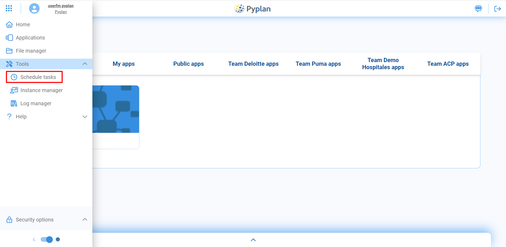
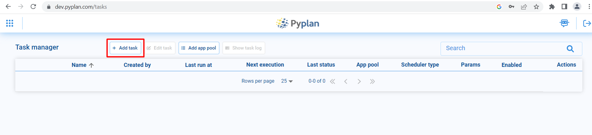
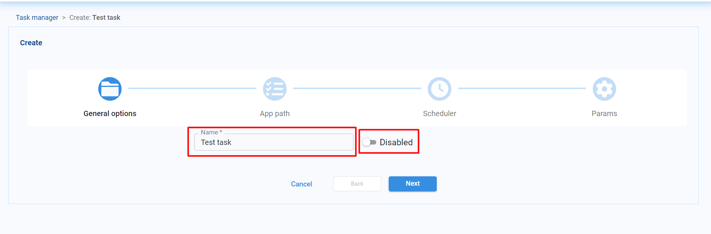
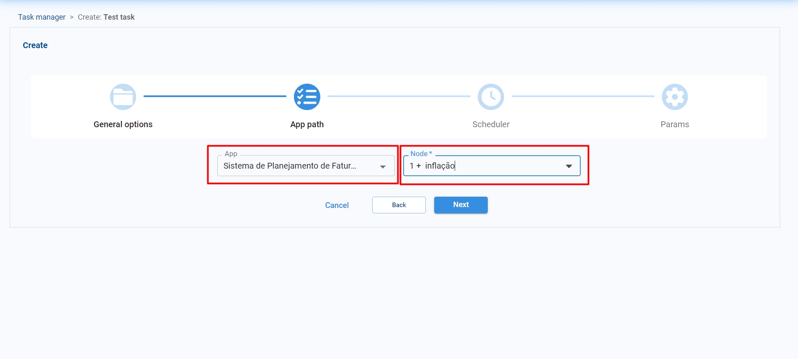
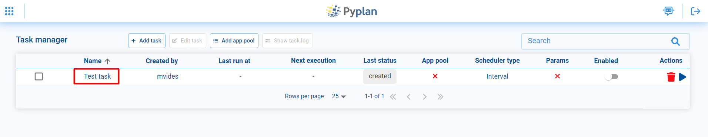
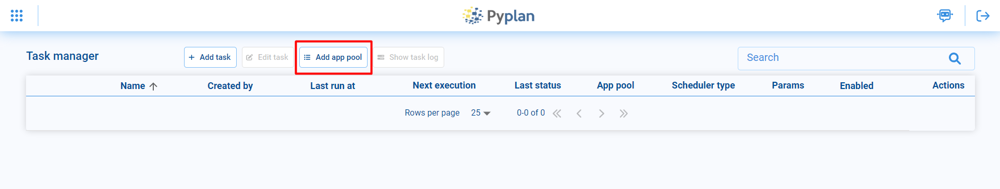
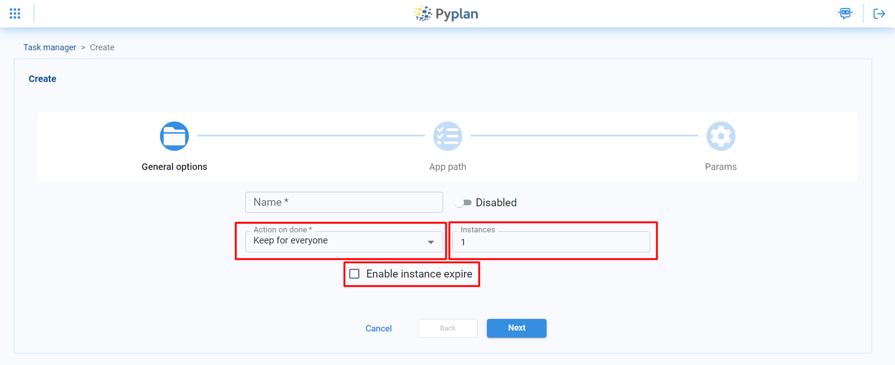
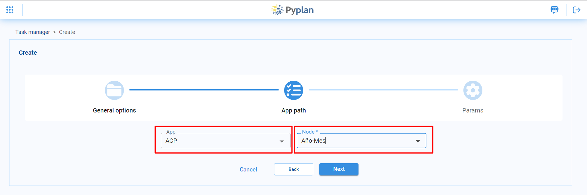
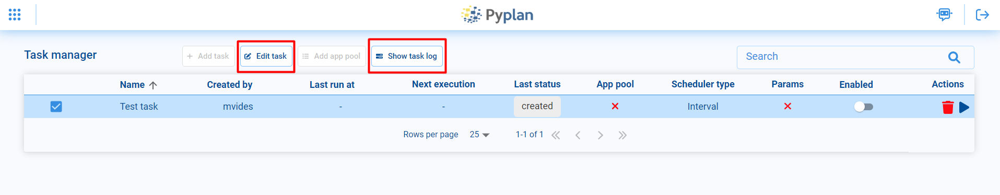
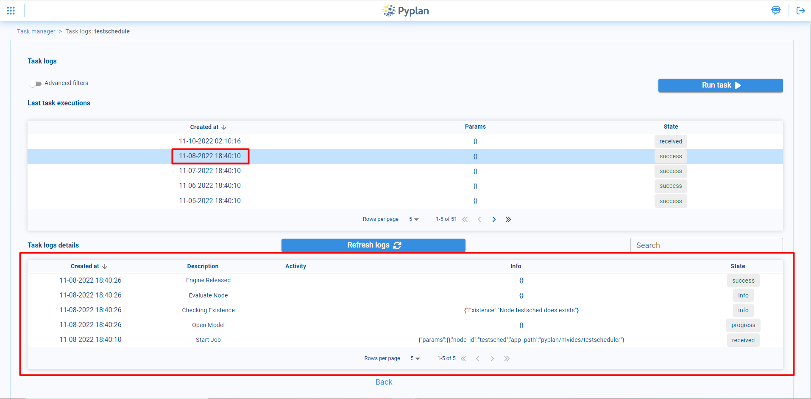

Tareas programadas
Contents
Tareas programadas#
Pyplan cuenta con un administrador de tareas para programar actividades de forma automática. Esta herramienta se encuentra disponible en la barra lateral izquierda, debajo de menú Tools, en la opción de Schedule tasks.
Tareas#
Para crear una tarea programada se debe seleccionar la opción Add task en la parte superior.
A continuación se abre el menú de creación de tareas. En la parte de General options se puede elegir un nombre para la tarea y se indica si la tarea estará habilitada o no.
Luego, en la opción de App path se debe seleccionar la aplicación y el nodo correspondiente que se establece ejecutar con la tarea programada.
En la opción de Scheduler se puede seleccionar la periodicidad de ejecución de la tarea. Para ello se dispone de 3 opciones
Interval: Permite ejecutar la tarea cada cierto intervalo de tiempo, por ejemplo, cada día o cada hora.
Custom: Libre para programar la ejecución de la tarea, se puede seleccionar desde hora o días de la semana queremos que se ejecute
Clocked: Para correr la tarea en un día y hora específicos.
Por último en el apartado Params, en caso de que el nodo a ejecutar en la tarea programada sea una función que dependa de ciertos parámetros, se puede especificar tales parámetros al momento de ejecutarla.
Select: Posibilita seleccionar los parámetros entre una lista predeterminada.
Input: Permite que el usuario pueda ingresar el valor del parámetro.
Checkbox: El usuario podrá ingresar parámetros que puede tomar valores True o False mediante un checkbox.
Finalmente se puede ver la tarea creada en el task manager, donde también se puede monitorear su ejecución, habilitar/deshabilitar, editar o eliminar nuestra tarea, entre otras cosas.
App pool#
Una app pool es una herramienta que permite ejecutar un nodo de una aplicación y que dicha aplicación quede disponible para que otros usuarios puedan acceder a ella y seguir trabajando una vez que se haya terminado de ejecutar el nodo correspondiente. Para crear una app pool se debe seleccionar la opción Add app pool en la parte superior.
En la parte de General options se puede elegir un nombre para la app pool y se tiene la posibilidad de elegir si se quiere que la app pool esté disponible para todos los usuarios o solo para alguno en particular. También se pueden establecer cuántas instancias de la app estarán disponibles para su uso. Y por último también se puede, en caso de ser necesario, especificar una fecha de expiración para las instancias.
Al igual que con las tareas programadas, en las opción de App path se debe seleccionar la aplicación y el nodo correspondiente que se quiere ejecutar.
En el apartado Params, en caso de que el nodo que vamos a ejecutar en la app pool sea una función que dependa de ciertos parámetros, se puede especificar tales parámetros al momento de ejecutarla.
Select: Posibilita seleccionar los parámetros entre una lista predeterminada.
Input: Permite que el usuario pueda ingresar el valor del parámetro.
Checkbox: El usuario podrá ingresar parámetros que puede tomar valores True o False mediante un checkbox.
Editar y ver logs#
En caso de ser necesario, se puede editar alguna de las tareas o app pool, seleccionandola y haciendo click en la opción Edit task, donde se pueden modificar todas las opciones que se hayan seleecionado al momento de ser creadas.
Además se pueden monitorizar los logs de la tarea/app pool desde la opción Show task logs, donde se puede obersrvar las últimas veces que fue ejecutada y se pueden revisar los logs de las correspondientes ejecuciones.
